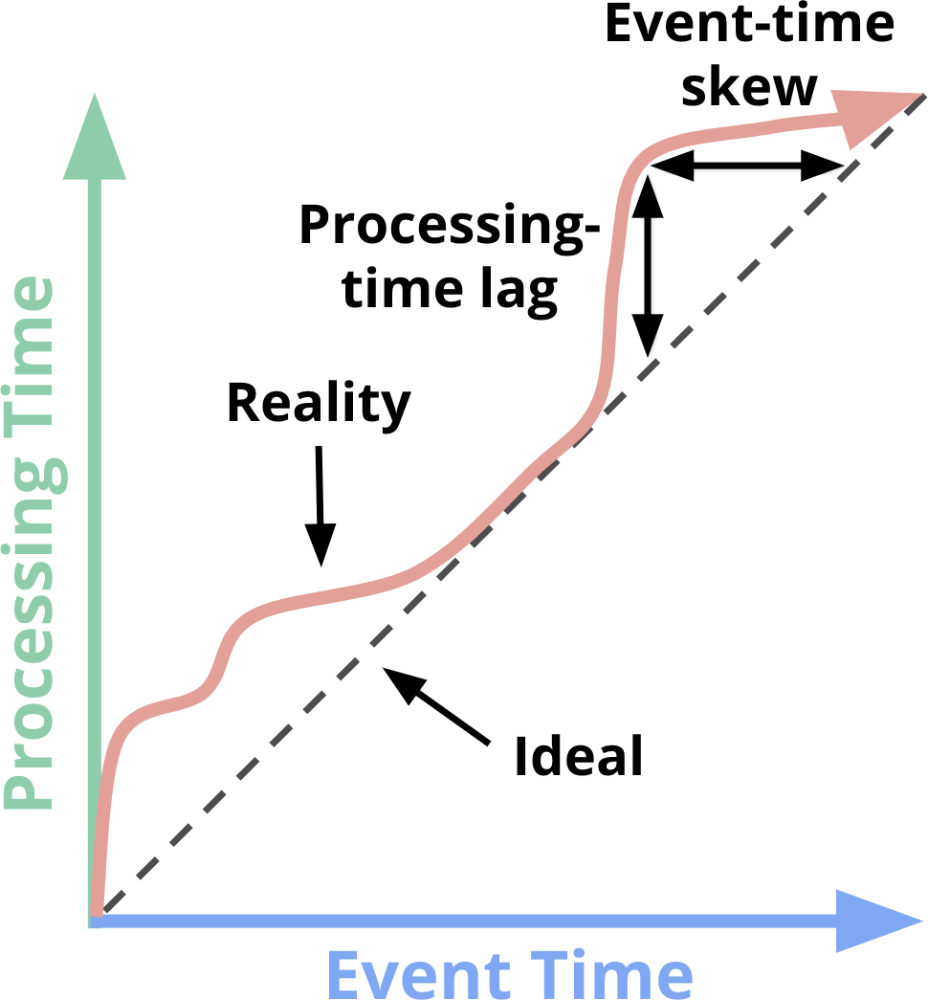

Terminology: What Is Streaming?
Before going any further, I’d like to get one thing out of the way: what is streaming? The term streaming is used today to mean a variety of different things (and for simplicity I’ve been using it somewhat loosely up until now), which can lead to misunderstandings about what streaming really is or what streaming systems are actually capable of. As a result, I would prefer to define the term somewhat precisely.
The crux of the problem is that many things that ought to be described by what they are (unbounded data processing, approximate results, etc.), have come to be described colloquially by how they historically have been accomplished (i.e., via streaming execution engines). This lack of precision in terminology clouds what streaming really means, and in some cases it burdens streaming systems themselves with the implication that their capabilities are limited to characteristics historically described as “streaming,” such as approximate or speculative results.
Given that well-designed streaming systems are just as capable (technically more so) of producing correct, consistent, repeatable results as any existing batch engine, I prefer to isolate the term “streaming” to a very specific meaning:
Streaming system
A type of data processing engine that is designed with infinite datasets in
mind.
If I want to talk about low-latency, approximate, or speculative results, I use those specific words rather than imprecisely calling them “streaming.”
Precise terms are also useful when discussing the different types of data one might encounter. From my perspective, there are two important (and orthogonal) dimensions that define the shape of a given dataset: cardinality and constitution.
The cardinality of a dataset dictates its size, with the most salient aspect of cardinality being whether a given dataset is finite or infinite. Here are the two terms I prefer to use for describing the coarse cardinality in a dataset:
Bounded data
A type of dataset that is finite in size.
Unbounded data
A type of dataset that is infinite in size (at least theoretically).
Cardinality is important because the unbounded nature of infinite datasets imposes additional burdens on data processing frameworks that consume them. More on this in the next section.
The constitution of a dataset, on the other hand, dictates its physical manifestation. As a result, the constitution defines the ways one can interact with the data in question. We won’t get around to deeply examining constitutions until Chapter 6, but to give you a brief sense of things, there are two primary constitutions of importance:
Table
1
A holistic view of a dataset at a specific point in time. SQL systems have
traditionally dealt in tables.
Stream
An element-by-element view of the evolution of a dataset over time. The
MapReduce lineage of data processing systems have traditionally dealt in
streams.
We look quite deeply at the relationship between streams and tables in Chapters 6 , 8 , and 9 , and in Chapter 8 we also learn about the unifying underlying concept of time-varying relations that ties them together. But until then, we deal primarily in streams because that’s the constitution pipeline developers directly interact with in most data processing systems today (both batch and streaming). It’s also the constitution that most naturally embodies the challenges that are unique to stream processing.
On the Greatly Exaggerated Limitations of
Streaming
On that note, let’s next talk a bit about what streaming systems can and can’t do, with an emphasis on can. One of the biggest things I want to get across in this chapter is just how capable a well-designed streaming system can be. Streaming systems have historically been relegated to a somewhat niche market of providing low-latency, inaccurate, or speculative results, often in conjunction with a more capable batch system to provide eventually correct results; in other words, the Lambda Architecture.
For those of you not already familiar with the Lambda Architecture, the basic idea is that you run a streaming system alongside a batch system, both performing essentially the same calculation. The streaming system gives you low-latency, inaccurate results (either because of the use of an approximation algorithm, or because the streaming system itself does not provide correctness), and some time later a batch system rolls along and provides you with correct output. Originally proposed by Twitter’s Nathan Marz (creator of Storm), it ended up being quite successful because it was, in fact, a
2
fantastic idea for the time; streaming engines were a bit of a letdown in the correctness department, and batch engines were as inherently unwieldy as you’d expect, so Lambda gave you a way to have your proverbial cake and eat it too. Unfortunately, maintaining a Lambda system is a hassle: you need to build, provision, and maintain two independent versions of your pipeline and then also somehow merge the results from the two pipelines at the end.
As someone who spent years working on a strongly consistent streaming engine, I also found the entire principle of the Lambda Architecture a bit unsavory. Unsurprisingly, I was a huge fan of Jay Kreps’ “Questioning the Lambda Architecture” post when it came out. Here was one of the first highly visible statements against the necessity of dual-mode execution. Delightful. Kreps addressed the issue of repeatability in the context of using a replayable system like Kafka as the streaming interconnect, and went so far as to propose the Kappa Architecture, which basically means running a single pipeline using a well-designed system that’s appropriately built for the job at hand. I’m not convinced that notion requires its own Greek letter name, but I fully support the idea in principle.
Quite honestly, I’d take things a step further. I would argue that well- designed streaming systems actually provide a strict superset of batch functionality. Modulo perhaps an efficiency delta, there should be no need for batch systems as they exist today. And kudos to the Apache Flink folks for taking this idea to heart and building a system that’s all-streaming-all-the- time under the covers, even in “batch” mode; I love it.
BATCH AND STREAMING EFFICIENCY DIFFERENCES
One which I propose is not an inherent limitation of streaming systems,
but simply a consequence of design choices made in most streaming
systems thus far. The efficiency delta between batch and streaming is
largely the result of the increased bundling and more efficient shuffle
transports found in batch systems. Modern batch systems go to great
lengths to implement sophisticated optimizations that allow for
remarkable levels of throughput using surprisingly modest compute
resources. There’s no reason the types of clever insights that make batch
systems the efficiency heavyweights they are today couldn’t be
incorporated into a system designed for unbounded data, providing users
flexible choice between what we typically consider to be high-latency,
higher-efficiency “batch” processing and low-latency, lower-efficiency
“streaming” processing. This is effectively what we’ve done at Google
with Cloud Dataflow by providing both batch and streaming runners
under the same unified model. In our case, we use separate runners
because we happen to have two independently designed systems
optimized for their specific use cases. Long term, from an engineering
perspective, I’d love to see us merge the two into a single system that
incorporates the best parts of both while still maintaining the flexibility of
choosing an appropriate efficiency level. But that’s not what we have
today. And honestly, thanks to the unified Dataflow Model, it’s not even
strictly necessary; so it may well never happen.
The corollary of all this is that broad maturation of streaming systems combined with robust frameworks for unbounded data processing will in time allow for the relegation of the Lambda Architecture to the antiquity of big data history where it belongs. I believe the time has come to make this a reality. Because to do so—that is, to beat batch at its own game—you really only need two things:
Correctness
This gets you parity with batch. At the core, correctness boils down to
consistent storage. Streaming systems need a method for checkpointing
persistent state over time (something Kreps has talked about in his “Why
local state is a fundamental primitive in stream processing” post), and it
must be well designed enough to remain consistent in light of machine
failures. When Spark Streaming first appeared in the public big data
scene a few years ago, it was a beacon of consistency in an otherwise
dark streaming world. Thankfully, things have improved substantially
since then, but it is remarkable how many streaming systems still try to
get by without strong consistency.
To reiterate—because this point is important: strong consistency is
3
required for exactly-once processing, which is required for correctness,
which is a requirement for any system that’s going to have a chance at
meeting or exceeding the capabilities of batch systems. Unless you just
truly don’t care about your results, I implore you to shun any streaming
system that doesn’t provide strongly consistent state. Batch systems don’t
require you to verify ahead of time if they are capable of producing
correct answers; don’t waste your time on streaming systems that can’t
meet that same bar.
If you’re curious to learn more about what it takes to get strong
consistency in a streaming system, I recommend you check out the
MillWheel, Spark Streaming, and Flink snapshotting papers. All three
spend a significant amount of time discussing consistency. Reuven will
dive into consistency guarantees in Chapter 5, and if you still find
yourself craving more, there’s a large amount of quality information on
this topic in the literature and elsewhere.
Tools for reasoning about time
This gets you beyond batch. Good tools for reasoning about time are
essential for dealing with unbounded, unordered data of varying event-
time skew. An increasing number of modern datasets exhibit these
characteristics, and existing batch systems (as well as many streaming
systems) lack the necessary tools to cope with the difficulties they impose
(though this is now rapidly changing, even as I write this). We will spend
the bulk of this book explaining and focusing on various facets of this
point.
To begin with, we get a basic understanding of the important concept of
time domains, after which we take a deeper look at what I mean by
unbounded, unordered data of varying event-time skew. We then spend
the rest of this chapter looking at common approaches to bounded and
unbounded data processing, using both batch and streaming systems.
Event Time Versus Processing Time
3
To speak cogently about unbounded data processing requires a clear understanding of the domains of time involved. Within any data processing system, there are typically two domains of time that we care about:
Event time
This is the time at which events actually occurred.
Processing time
This is the time at which events are observed in the system.
Not all use cases care about event times (and if yours doesn’t, hooray! your life is easier), but many do. Examples include characterizing user behavior over time, most billing applications, and many types of anomaly detection, to name a few.
In an ideal world, event time and processing time would always be equal, with events being processed immediately as they occur. Reality is not so kind, however, and the skew between event time and processing time is not only nonzero, but often a highly variable function of the characteristics of the underlying input sources, execution engine, and hardware. Things that can affect the level of skew include the following:
Shared resource limitations, like network congestion, network
partitions, or shared CPU in a nondedicated environment
Software causes such as distributed system logic, contention, and so
on
Features of the data themselves, like key distribution, variance in
throughput, or variance in disorder (i.e., a plane full of people taking
their phones out of airplane mode after having used them offline for
the entire flight)
As a result, if you plot the progress of event time and processing time in any real-world system, you typically end up with something that looks a bit like the red line in Figure 1-1.

Figure 1-1. Time-domain mapping. The x-axis represents event-time completeness in the
system; that is, the time X in event time up to which all data with event times less than X
have been observed. The y-axis represents the progress of processing time; that is, normal
clock time as observed by the data processing system as it executes.
In Figure 1-1, the black dashed line with slope of 1 represents the ideal, where processing time and event time are exactly equal; the red line represents reality. In this example, the system lags a bit at the beginning of processing time, veers closer toward the ideal in the middle, and then lags
4
again a bit toward the end. At first glance, there are two types of skew visible in this diagram, each in different time domains:
Processing time
The vertical distance between the ideal and the red line is the lag in the
processing-time domain. That distance tells you how much delay is
observed (in processing time) between when the events for a given time
occurred and when they were processed. This is the perhaps the more
natural and intuitive of the two skews.
Event time
The horizontal distance between the ideal and the red line is the amount
of event-time skew in the pipeline at that moment. It tells you how far
behind the ideal (in event time) the pipeline is currently.
In reality, processing-time lag and event-time skew at any given point in time are identical; they’re just two ways of looking at the same thing. The important takeaway regarding lag/skew is this: Because the overall mapping between event time and processing time is not static (i.e., the lag/skew can vary arbitrarily over time), this means that you cannot analyze your data solely within the context of when they are observed by your pipeline if you care about their event times (i.e., when the events actually occurred). Unfortunately, this is the way many systems designed for unbounded data have historically operated. To cope with the infinite nature of unbounded datasets, these systems typically provide some notion of windowing the incoming data. We discuss windowing in great depth a bit later, but it essentially means chopping up a dataset into finite pieces along temporal boundaries. If you care about correctness and are interested in analyzing your data in the context of their event times, you cannot define those temporal boundaries using processing time (i.e., processing-time windowing), as many systems do; with no consistent correlation between processing time and event time, some of your event-time data are going to end up in the wrong processing-time windows (due to the inherent lag in distributed systems, the online/offline nature of many types of input sources, etc.), throwing correctness out the window, as it were. We look at this problem in more
5
detail in a number of examples in the sections that follow, as well as the remainder of the book.
Unfortunately, the picture isn’t exactly rosy when windowing by event time, either. In the context of unbounded data, disorder and variable skew induce a completeness problem for event-time windows: lacking a predictable mapping between processing time and event time, how can you determine when you’ve observed all of the data for a given event time X? For many real-world data sources, you simply can’t. But the vast majority of data processing systems in use today rely on some notion of completeness, which puts them at a severe disadvantage when applied to unbounded datasets.
I propose that instead of attempting to groom unbounded data into finite batches of information that eventually become complete, we should be designing tools that allow us to live in the world of uncertainty imposed by these complex datasets. New data will arrive, old data might be retracted or updated, and any system we build should be able to cope with these facts on its own, with notions of completeness being a convenient optimization for specific and appropriate use cases rather than a semantic necessity across all of them.
Before getting into specifics about what such an approach might look like, let’s finish up one more useful piece of background: common data processing patterns.